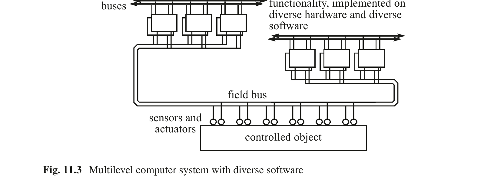

第11章 系统设计
Real-Time Systems — Hermann Kopetz & Wilfried Steiner 著 | AI 辅助翻译
本章概述
本章关于系统设计，首先讨论一般意义上的设计。设计者必须深入了解问题领域的各个方面，才能为应用程序设计出适当的架构。在计算机系统设计中，最重要的目标是控制演进中的人工制品的复杂性。对目的、需求和约束的彻底分析可以限制设计空间，并避免对不切实际的设计替代方案进行探索。架构设计的核心步骤是将识别出的系统功能分配到近乎独立的子系统。架构设计阶段的结果是一份接口控制文档（Interface Control Document），精确规定了子系统之间接口的功能和时间属性。子系统应具有高度的内部内聚性和简单的外部接口。接下来，讨论了不同的设计风格，如基于模型的设计和基于组件的设计。安全关键系统的设计始于对设想应用的安全分析，例如故障树分析和/或故障模式与影响分析（FMEA），以及开发令人信服的安全案例。引用了在设计安全关键系统时必须遵守的不同标准，例如针对电气和电子设备的 IEC 61508 标准和针对机载设备软件的 ARINC DO 178C 标准。消除大型安全关键系统的所有设计错误（例如软件错误或硬件勘误）是一个重大挑战。设计多样性可以帮助缓解剩余设计错误的问题，并支持软件的可维护性。软件的可维护性对于纠正软件中的设计错误以及使软件适应不断变化的应用场景的无穷需求是必需的。本章最后一节介绍了时间触发架构设计所遵循的原则。
11.1 系统设计
11.1.1 设计过程
设计本质上是一种创造性的活动，人类心智中的直觉和理性问题解决系统都深度参与其中。许多不同领域的设计活动都有一个共同的核心：建筑设计、产品设计和计算机系统设计都是紧密相关的。设计者必须找到一个解决方案，以协调各种看似冲突的目标，解决一个往往规定不清晰的设计问题。最终，优秀设计与糟糕设计之间的区别往往取决于主观判断。
让我们从一开始引入一个相当抽象的系统定义：系统（例如汽车）是许多相关部分（子系统）相互作用的结果，这些部分构成一个整体，并向其环境提供有目的的服务。它被一层物理或虚拟的外壳所封装，将系统与其环境分隔开来。在计算机系统中，外壳中的接口使系统与其环境之间能够进行消息交换 [Kop22, p.10]。
系统设计的第一项活动是目的分析。在目的分析阶段，确定设想解决方案的目标以及经济和技术约束。如果此阶段结束时的评估结果是"继续"，则组建项目团队开始需求分析和系统设计阶段。关于如何在设计大型系统时进行这第一个最关键的阶段，存在三种相反的观点：
(i) 有纪律的顺序方法，每个生命周期阶段在上一个阶段彻底完成和验证后才开始（宏大设计）
(ii) 快速原型方法，在需求分析完成之前就开始实施解决方案的关键部分（快速原型）
(iii) 层次化架构设计方法，将总体系统功能分配到顶层子系统，并首先制定这些子系统之间交互的精确规范
宏大设计的理由在于，必须在设计特定解决方案（"如何？"）之前，获得对整个问题的详细且无偏见的规范（"什么？"）。宏大设计的困难在于没有明确的停止规则。对大型问题的分析和理解永远不会完成，而且总有充分的理由在开始真正的设计工作之前提出更多关于需求的问题。此外，世界在分析进行的过程中也在不断演变，改变了最初的场景。"分析瘫痪"一词被创造出来就是为了指出这种危险。
快速原型方法的理由在于，通过在早期阶段研究关键功能的特定解决方案，可以学到很多关于问题空间的知识。在寻找具体解决方案过程中遇到的困难引导设计者提出关于需求的正确问题。快速原型的困境在于，ad hoc 实现是以巨大的代价开发的。由于第一个原型只解决设计问题的有限方面，通常需要完全丢弃第一批原型并重新开始。
层次化架构设计方法的理由在于，它遵循经过充分验证的"分解与征服"原则，将复杂的设计问题划分为复杂度较低且近乎独立的子系统，并为子系统的开发建立明确的约束（精确规定的接口）。作者认为，这第三种替代方案——层次化架构设计——是设计大型系统的最合理方法。
在架构设计阶段，关键设计者应首先尝试对目的和总体架构功能有良好的理解，将只影响子系统内部细节的问题留待以后解决。Fred Brook 在其著作 [Bro10] 中指出，设计的概念完整性是单一心智的结果。如果不清楚如何解决特定问题，则应以明确的意图研究最困难部分的初步原型——在获得所需的洞察后放弃该解决方案。
几年前，Peters [Pet79] 在一篇关于设计的论文中论证了设计属于棘手问题（wicked problems）的范畴。棘手问题具有以下特征：
(i) 棘手问题不能以确定的方式陈述，不能从其环境中抽象出来。每当试图将棘手问题从其周围环境中隔离时，问题就会失去其特殊性。每个棘手问题在某种程度上都是独特的，不能抽象处理。
(ii) 棘手问题不能在心中没有解决方案的情况下进行规范。规范（"什么？"）与实现（"如何？"）之间的区别并不像学术界经常宣称的那样容易。
(iii) 棘手问题的解决方案没有停止规则：对于任何给定的解决方案，总有一个更好的解决方案。总有充分的理由去了解更多关于需求的信息以产生更好的设计。
(iv) 棘手问题的解决方案不能是对或错的；它们只能更好或更差。
(v) 对棘手问题的解决方案没有确定的测试：每当测试成功通过时，该解决方案仍然可能以其他方式失败。
11.1.2 约束的角色
每个设计都嵌入在一个由一组已知和未知约束所界定的设计空间中。从某种意义上说，约束是需求的对立面。开始设计的一个良好实践是捕捉约束并将其分类为软约束、硬约束和限制性约束。软约束是期望但非强制性的约束。硬约束是给定的必须遵守的强制性约束。限制性约束是限制设计效用的约束。
约束限制了设计空间，帮助设计者避免探索在给定环境中不切实际的设计替代方案。因此，约束是我们的朋友，而不是我们的对手。必须特别注意限制性约束，因为这些约束对于确定设计对客户的价值至关重要。随着设计的推进，精确监控限制性约束是一个良好实践。一个重要的限制性约束是系统的成本。
11.1.3 系统设计与软件设计
在计算机应用设计的早期，设计的焦点是软件的功能方面，很少考虑软件生成的计算的非功能属性，如时序、能效或容错。这种焦点导致了至今仍然盛行的软件设计方法——将注意力集中在程序的数据转换方面，而很少考虑非功能需求，如时序或能耗。
软件本身是一个描述真实或虚拟机器操作的计划。计划本身（没有机器）没有任何时间维度，不可能有状态（状态依赖于精确的实时概念——参见第 4.2.1 节），也没有行为。只有软件与目标机器——平台——的结合才能产生行为。这是我们将组件而非作业（参见第 4.1.1 节）视为嵌入式系统架构设计级别的基本构造的其中一个原因。
PIM 定义了组件的预期行为，包括对其非功能属性的需求。组件的这种预期行为可以通过不同的实现技术或其组合来实现（即存在不同的方法来实现 PSM）：
(i) 为可编程计算机设计软件，产生一个由本地操作系统、中间件和应用软件模块组成的灵活组件。
(ii) 为现场可编程门阵列（FPGA）开发软件，通过一组高度并发逻辑元件的适当互连来实现组件的功能。
(iii) 开发专用集成电路（ASIC），直接在硬件中实现组件的功能。
如果自包含硬件/软件单元的组件特性和接口规范能够保持，多个 PIM 组件可以在所有三种实现技术中实现在单个物理芯片上。
虽然在 MPSoC 实现中建立自包含性和接口等价性相对简单，但在可编程计算机中却很困难，特别是当它们在硬件与应用软件之间实现多层软件栈时（例如，虚拟化管理器、操作系统、中间件）。要用于硬实时系统，软件栈在目标机器上的行为必须被充分理解。只有当软件层的设计从一开始就考虑到实时性时，才能建立这种理解（参见第 14.4.1 节）。因此，实现通用 IT 解决方案的组件将无法确保自包含性和接口等价性。同样，当今许多具有多级缓存和推测执行的复杂顺序处理器的硬件时序性能也难以规定。
将多个组件集成到单个芯片上可能在短期到中期具有经济效益，但也伴随着显著的风险：
(i) 对组件交互的理解不完整：即使不同的组件被分配到多核 SoC 中的不同核心，组件可能以不明显的方式交互。例如，共享内存总线或共享电池的能耗可能在组件集成过程中被轻易忽视或过度简化。
(ii) 可测试性：无探针效应的测试是一个挑战（参见第 12.2.1 节），因为测试子系统也必须（部分）集成在同一芯片上。
(iii) 可扩展性：多个组件的集成可能导致芯片的专用化，限制其部署可能性。此外，更换集成组件比更换实现在不同芯片上的组件更加困难。
(iv) 故障隔离：某些故障类别（参见第 6.1.1 节）将导致芯片上的多个（甚至全部）组件发生故障。集成在单个芯片上的所有组件对于这些故障属于同一个故障隔离单元（FCU）。
从外部看，组件的服务必须与所选择的实现技术无关。只有这样，才能在不影响系统层面的情况下更改组件的实现。然而，从一些非功能组件特性（如能耗、硅面积需求、变更灵活性或非经常性开发成本）的角度来看，不同的组件实现具有截然不同的特性。在许多应用中，期望首先在架构级别开发一个硬件无关的组件服务模型，并将关于组件最终实现技术的详细决策推迟到后期阶段。
11.2 设计阶段
设计是一种创造性的整体人类活动，不能简化为遵循设计规则手册中的一组规则。设计是一门艺术，辅以科学原则。因此，试图建立一套完整的设计规则并开发完全自动化的设计环境是徒劳的。设计工具可以帮助设计者处理并表示设计信息，并帮助分析设计问题。随着设计和自动化工具能力的增长，设计者的可能性也在增长。然而，工具不能取代创造性的设计者。此外，工具本身可能变得非常复杂，可能需要工具资格认证，即对其正确操作的严格证据。
理论上，设计过程应结构化为一系列不同的阶段：目的分析、需求捕获、架构设计、详细组件设计与实现、组件验证、组件集成、系统验证，最后是系统交付使用。实际上，这样严格顺序的设计过程分解几乎是不可能的，因为新设计问题的全部范围直到设计过程进行到深处才被充分掌握，这需要各设计阶段之间的频繁迭代。
本章的重点是架构设计阶段，而验证阶段在第 12 章中涵盖。
11.2.1 目的分析
每一个理性的设计都是由给定的目的驱动的。目的将设计置于用户期望和经济理由的更广阔背景中，因此先于需求。目的分析——即分析为什么需要新系统以及设计的最终目标是什么——必须在需求分析之前进行，后者已经限制了分析的范围并将设计工作引导到特定方向。需要关键的目的分析以将需求置于适当的视角中。
在每个项目中，期望与在给定技术和经济约束下可实现的内容之间存在着持续的冲突。对这些技术和经济约束的良好理解和文档化可以缩减设计空间，并帮助避免探索不切实际的设计替代方案。
11.2.2 需求捕获
需求阶段的重点是获得对基本系统功能的需求和约束的良好理解及简洁文档化，这些功能为项目提供了经济理由。总是有被不相关的表征细节问题引入歧途的诱惑，这些问题会模糊整体视野。许多人觉得研究一个明确规定好的次要问题比专注于关键系统问题更容易。需要经验丰富的设计者来决定什么是次要问题，什么是关键系统问题。
每个需求必须伴随一个验收准则，使得在项目结束时可以衡量该需求是否得到满足。如果不可能为一个需求定义明确的验收测试，那么该需求不可能很重要：永远无法确定实现是否满足该需求。一个关键的设计者将总是对那些无法通过一系列理性论证来证实的假定需求保持怀疑——这些论证最终能导致所述需求对系统目的的可度量的贡献。
在嵌入式系统领域，已经开发了许多表征标准和工具来支持系统工程师（参见第 11.3.3 节）。需求统一表征的标准尤为重要，因为它们简化了设计者和用户之间的沟通。
11.2.3 架构设计
在系统目的已经确定并在所有相关方之间达成一致，主要需求已经捕获和记录之后，生命周期中最关键的阶段——系统架构设计——随之而来。在分布式实时系统的语境中，架构设计建立了整个系统向近乎独立且稳定的子系统的分解，每个子系统的目的，以及子系统之间链接接口的精确规范。
具有稳定中间形式的系统比没有稳定中间形式的系统演进得快得多 [Sim81]。稳定中间形式——例如稳定的子系统——由简单且牢固的接口封装。这些接口为后来的子系统设计提供了基本约束。
架构设计是一个高度迭代的设计阶段。应勾画不同的分解方案，并从多个不同视角评估每个分解方案中每个提议的子系统，如功能性、接口复杂性、可靠性、硬件成本、软件成本、可维护性，以及相对于可预见变更的接口稳定性。在找到最可接受的子系统结构后，必须为所有子系统的链接接口生成一套接口控制文档（ICD）[Cad22]。
架构设计阶段的结果是子系统功能的总体规范和子系统之间链接接口的详细规范，这些记录在接口控制文档（ICD）中。详细的接口规范必须首先考察子系统之间所需的信息流。如果在架构层面，信息流是单向的，那么这种单向性必须在详细通信协议设计中保留。时间触发协议在单向信息流的接收端提供错误检测，而无需发送方的任何参与。通过设计消除故障接收方向正确发送方的错误反向传播，是时间触发通信协议最重要且最有益的特性之一。信息项、子系统之间消息的最大大小，以及时间触发消息将被发送的周期性时刻，是包含在 ICD 中的接口规范的一部分。ICD 的开发和精心维护——可能是系统开发中最重要的文档——应得到最高管理关注。将项目组之间的组织接口与 ICD 中包含的技术接口同构是一个良好实践。这种同构提高了 ICD 的稳定性和精确性，因为技术责任和组织责任是相辅相成的。
11.2.4 组件的设计
在架构设计阶段结束时，需求已被分配到子系统，子系统的链接接口（LIF）在值域和时域上已被精确规定。设计工作现在可以分解为一组并发的设计活动，每个活动专注于单个子系统的设计、实现和测试。
在超大规模系统的情况下，在顶层架构上将系统分解为子系统之后，可以在下一级对每个子系统进行一组独立的架构设计阶段。在这个递归分解结束时，用于组件的顶层规范已经就绪。请记住，组件是一个硬件/软件单元，通过组件的链接接口提供服务。
组件与其本地环境（例如被控对象或其他集群）之间本地接口（参见第 4.4.5 节）的详细设计不在架构设计阶段涵盖，因为只有这些本地接口的语义而非语法是组件集群 LIF 规范所需的。这些本地接口的规范和实现由组件的详细设计负责。在某些情况下，例如为操作员设计具体的人机界面，这可能是一项主要活动。
实现组件设计所需的具体步骤取决于所选择的实现技术。如果组件的服务通过 CPU 上的软件设计实现，那么所需的设计步骤将根本不同于以 ASIC 为最终结果的设计。由于本书的重点是嵌入式系统的架构设计话题，我们不详细讨论不同实现技术的组件实现技术。
11.3 设计风格
11.3.1 基于模型的设计
在本书的第 2 章中，我们强调了模型构建对于理解任何真实世界场景的作用。基于模型的设计是一种设计方法，它在设计周期早期为被控对象和控制计算机系统的可执行模型的开发与集成建立了一个有用的框架。
在完成控制系统的目的分析之后，在基于模型的设计中，开发被控对象（工厂）和控制计算机系统的高层可执行模型，以便在高层抽象上研究这些模型的动态交互。
基于模型设计的第一步涉及被控对象（即工厂）动态特性的识别和数学建模。在可能的情况下，将工厂模型的结果与真实工厂运行中的实验数据进行比较，以验证工厂模型的忠实度。第二步，动态工厂模型的数学分析用于合成控制算法，这些算法是针对给定工厂模型动态特性进行调优的。第三步，可执行的工厂模型和可执行的控制计算机模型在仿真环境中集成，以便验证模型之间的正确交互，并研究与工厂模型相关的所考虑控制算法的质量。虽然这种仿真通常以仿真时间运行（SIL——软件在环），但重要的是，在仿真环境中工厂模型和控制计算机模型之间交换的消息与（后来的）实时控制环境之间的相位关系保持完全一致 [Per10]。消息之间这种精确的相位关系确保了仿真中和目标系统中的消息顺序相同。最后，在第四阶段，控制计算机系统模型被翻译（可能自动地）到控制计算机的目标执行环境中。
在硬件在环仿真（HIL）中，仿真模型必须以实时方式执行，因为仿真的子系统是由最终目标硬件构成的。
基于模型的设计使得不仅可以在正常操作条件下研究系统性能，而且可以在罕见事件情况下（例如系统关键部分发生故障时）进行研究。在仿真过程中，可以调优控制算法，使得在罕见事件场景中能够维持工厂的安全运行。此外，基于模型的设计环境可以用于自动化测试和工厂操作员的培训。
基于模型设计的一个关键问题集中在工厂模型与控制计算机系统模型之间链接接口（LIF）的规范上。正如第 4.4.5 节已经讨论的，这个接口规范必须涵盖穿越 LIF 的消息的值维度和时间维度。语义接口模型必须以可执行的形式呈现，以便可以在高层抽象上执行整个控制系统的仿真，并支持目标控制系统代码的自动生成。一个广泛使用的基于模型设计的工具环境是 MATLAB 设计环境 [Att09]。
11.3.2 基于组件的设计
在许多工程学科中，大型系统是由具有已知和已验证属性的预制组件构建的。组件通过稳定、可理解和标准化的接口连接。系统工程师了解组件的全局属性——因为它们与系统功能相关——以及组件接口的详细规范。在许多情况下，关于组件内部设计和实现的知识既不需要也得不到。这种构建系统的构造性方法的一个前提是，组件的已验证属性不受系统集成的影响。这种可组合性需求是为大型分布式实时系统的基于组件设计选择平台的一个重要约束。
基于组件的设计是一种中间相遇的设计方法。一方面，组件的功能和时间需求从所需的应用功能自顶向下导出。另一方面，可用组件的功能和时间能力由组件规范提供（自底向上）。在设计过程中，必须在组件需求和组件能力之间建立适当的匹配。如果没有满足需求的可用组件，就必须开发一个新组件。
任何基于组件设计的前提都是一个清晰明确的组件概念，它支持对跨越组件接口交付和获取的服务进行精确规范。第 4.1.1 节中引入的组件作为硬件-软件单元的概念提供了这样的组件概念。在许多非实时应用中，一个软件单元被认为构成一个组件（即纯软件组件）。在实时系统中，组件的时间属性与其值属性同样重要，纯软件组件的概念是有问题的，因为在不将软件与具体机器关联的情况下，无法为软件赋予任何时间能力。应用软件与具体机器的执行环境（中间件、操作系统）之间 API 的时间属性规范如此复杂，以至于对 API 时间属性的简单规范几乎不可能。如果理解组件接口规范所需的心智努力与理解组件操作内部所需的心智努力处于同一数量级，那么组件的抽象就不再有意义了。因此，在实时系统中，组件必须总是以软件和硬件的形式进行规范：PIM 规定了 PSM 必须实现的非功能属性需求（参见第 11.1.3 节）。
（硬件-软件）组件的时间能力由驱动组件硬件的振荡器频率决定。根据第 8.2.3 节，如果降低电压，这个频率也可以降低（电压-频率缩放），从而在节省完成计算所需能量的同时延长了计算执行所需的实时时间。一个了解到时间需求和能量需求的全盘资源调度器可以将组件的时间能力与应用的时间需求匹配起来，从而节省能量。在移动电池供电设备中节能非常重要，这是嵌入式系统市场的一个重要领域。
11.3.3 架构设计语言
对平台无关模型 PIM（架构层面的设计——参见第 4.4 节）的表示——例如以组件和消息的形式——需要一种适合此目的的表示法。
2007 年，对象管理组织（OMG）通过一个称为 MARTE（实时与嵌入式系统建模与分析）的配置文件（profile）扩展了统一建模语言（UML），该配置文件扩展了 UML 以支持在架构层面规范、设计和分析嵌入式实时系统 [OMG98]。UML-MARTE 的目标是对嵌入式系统的软件部分和硬件部分进行建模。UML-MARTE 的核心概念表达在两个包中：基础包涉及结构模型，因果包侧重于行为建模和时序方面。在 UML-MARTE 中，行为的基本单元称为动作（action），它将一组输入转换为一组输出，花费指定的实时持续时间。行为由动作组成并由触发器启动。UML-MARTE 规范包含一个关于时间建模的特殊小节。它区分了三种不同的时间抽象：(i) 逻辑时间（称为因果/时序时间），只关心时间顺序，没有任何事件之间时间度量的概念；(ii) 离散时间（称为时钟同步时间），时间的连续体被时钟分割为一组有序的粒度，动作可以在一个粒度内执行；(iii) 实时（称为物理/实时时间），其中实时的时间推进被精确建模。关于 UML-MARTE 的详细描述，请参阅 [OMG08]。SysML [Hau06] 是另一个 UML 配置文件（面向系统工程），受到实时工业界越来越多的关注。
架构设计语言的另一个示例是 AADL（架构分析与设计语言），由卡内基梅隆大学软件工程研究所开发，并于 2004 年由汽车工程师协会（SAE）标准化。AADL 被设计用于规范和分析大型嵌入式实时系统的架构。AADL 的核心概念是组件——通过接口与其他组件交互的概念。AADL 组件是一个软件单元，通过捕捉与软件单元绑定的机器特性的属性进行增强，从而可以表达时间需求和计算的最坏情况执行时间（WCET）。AADL 组件仅通过定义的接口进行交互，这些接口通过声明的连接相互绑定。AADL 支持图形用户界面，并包含涉及组件实现以及将组件分组为更抽象单元（称为包）的语言结构。有工具可用于从时序和可靠性角度分析 AADL 设计。关于 AADL 的详细描述，请参阅 [Fei06]。使用 TTEthernet（参见第 7.5.2 节）的集成模块化航空电子（IMA）的 AADL 建模在 [Rob16] 中给出。
UML、SysML、AADL 和 MARTE 的详细比较见 [Eve10]。进一步的架构语言有 GIOTTO 和 System C：
GIOTTO [Hen03] 是一种在架构层面表示时间触发嵌入式系统设计的语言。GIOTTO 提供中间抽象，允许设计工程师用从控制回路的高层稳定性分析中导出的时间属性来注释功能编程模块。在最后的开发步骤中（将软件模块分配到目标架构），这些注释是 GIOTTO 编译器必须考虑的约束。
System C 是 C++ 的扩展，能够在架构层面进行无缝的硬件/软件协同仿真，并提供逐步细化设计到硬件实现的寄存器传输级或 C 程序的能力 [Bla09]。System C 非常适合在 PIM 级别表示设计的功能。
11.3.4 分解的测试
我们不知道如何用绝对尺度度量架构设计阶段结果的质量。我们所能希望达到的最好效果是建立一组指南和检查清单，便于对两个设计替代方案进行相互比较。在项目开始时为设计替代方案的比较制定项目特定的检查清单是一个良好实践。本节中提供的指南和检查清单可以作为此类项目特定检查清单的起点。
功能内聚性 组件应实现一个自包含的功能，具有高度的内部内聚性和低的外部接口复杂性。如果组件是网关，即它处理来自其环境的输入/输出信号，那么在架构设计层面只关心到集群的抽象消息接口（LIF），而不关心到环境的本地接口（参见第 4.3.1 节）。以下问题列表旨在帮助确定组件的功能内聚性和接口复杂性：
(i) 组件是否实现了自包含的功能？
(ii) 组件的 g-state（基态）是否明确？
(iii) 在任何故障之后，只提供一级错误恢复（即重启整个组件）是否足够？需要多级错误恢复总是功能内聚性薄弱的标志。
(iv) 是否有控制信号穿越消息接口，还是组件到其环境的接口是严格的数据共享接口？严格的数据共享接口更简单，因此应优先选择。只要可能，尽量将时间控制保持在正在设计的子系统内部（例如，在输入端，信息拉取优于信息推送；参见第 4.4.1 节）！
(v) 有多少不同的数据元素通过消息接口传递？这些数据元素是否是组件接口模型的一部分？时间需求是什么？
(vi) 是否有相位敏感的数据元素通过消息接口传递？
可测试性 由于组件实现单一功能，必须能够隔离测试组件。以下问题应有助于评估组件的可测试性：
(i) 消息接口的时间属性和值属性是否精确规定，使得它们可以在测试环境中仿真？
(ii) 是否可以在没有探针效应的情况下观察所有输入/输出消息和组件的 g-state？
(iii) 是否可以从外部设置组件的 g-state 以减少测试序列的数量？
(iv) 组件软件是否具有确定性，使得相同的输入情况总是产生相同的结果？
(v) 测试组件容错机制的程序是什么？
(vi) 是否可以在组件中实现有效的内置自检？
可靠性 以下问题检查清单涉及设计的可靠性方面：
(i) 组件最恶意的故障对集群其余部分的影响是什么？如何检测？此故障如何影响最低性能准则？
(ii) 集群的其余部分如何保护免受故障组件的影响？
(iii) 如果通信系统完全失败，组件维持安全状态的本地控制策略是什么？
(iv) 集群中其他组件检测到组件故障需要多长时间？短的错误检测延迟可以大大简化错误处理。
(v) 组件故障后重启需要多长时间？专注于从任何类型的单一故障中快速恢复——单一拜占庭故障 [Dri03]。零故障情况自己会处理好，两个或更多独立的拜占庭故障情况代价高昂、不太可能发生，也不太可能成功。恢复有多复杂？
(vi) 正常操作功能和安全功能是否实现在不同的组件中，使得它们处于不同的 FCU 中？
(vii) 消息接口相对于预期的变更需求有多稳定？某个组件变更对集群其余部分的影响概率和影响是什么？
能量与功率 能耗是移动设备的一个关键非功能参数。功率控制有助于降低硅片温度，从而降低设备的故障率：
(i) 每个组件的能量预算是多少？
(ii) 峰值功耗是多少？峰值功率如何影响设备的温度和可靠性？
(iii) FCU 的不同组件是否有不同的电源，以减少由电源引起的共模故障的可能性？是否存在通过接地系统的共模故障可能性（例如雷击）？FTU 的 FCU 是否电隔离？
物理特性 粗心的物理安装有许多引入共模故障的可能性。以下问题列表应有助于检查这些可能性：
(i) 可更换单元的机械接口是否规定，这些可更换单元的机械边界是否与诊断边界一致？
(ii) FTU（参见第 6.4.2 节）的 FCU 是否安装在不同的物理位置，使得空间邻近故障（例如水、EMI 和事故中的机械损坏等共模外部故障）不会摧毁超过一个 FCU？
(iii) 布线需求是什么？由 EMI 干扰通过布线或接触不良引起的瞬时故障的后果是什么？
(iv) 组件的环境条件（温度、冲击和灰尘）是什么？它们是否与组件规范一致？
11.4 安全关键系统的设计
嵌入式系统在许多应用中在经济和技术上的成功导致计算机系统在那些一旦发生计算机故障就会产生严重后果的领域中得到了越来越多的部署。当计算机系统的故障可能导致灾难性后果——例如生命损失、重大财产损失或对环境造成灾难性破坏时，该计算机系统就是安全关键的（或硬实时系统）。
11.4.1 什么是安全？
安全可定义为系统在给定时间段内不发生可能导致灾难性后果的关键故障模式的概率。在文献 [Lal94] 中，神奇数字 10^9 小时（即 115,000 年）是与安全关键操作相关的 MTTF（平均故障前时间）。由于 VLSI 组件的硬件可靠性低于 10^9 小时，感知安全的设计必须基于通过冗余进行硬件故障屏蔽。仅通过测试不可能实现安全关键应用中所需 MTTF 级别的设计正确性置信度——广泛的测试可以在 10^4 到 10^5 小时量级的 MTTF 上建立置信度 [Lit93]。必须开发一个正式的可靠性模型，以建立所需的安全水平，考虑子系统的实验故障率和系统的冗余结构。
混合关键性架构 安全是一个系统属性——整体系统设计决定了哪些子系统是安全相关的，哪些子系统可以在不对剩余安全裕度造成严重后果的情况下发生故障。过去，许多安全关键功能在专用硬件上实现，与系统其余部分物理隔离。在这些情况下，相对容易使认证机构相信，安全关键和非安全关键系统功能之间的任何非预期干扰在设计中已被禁止。然而，随着交互安全关键功能数量的增长，通信和计算资源的共享变得不可避免。这导致了对混合关键性架构的需求，其中不同关键性的应用可以共存于一个单一集成架构中，并且必须通过架构机制排除不同关键性应用之间在值域和时域上的任何非预期干扰。如果混合关键性分区由软件在单个 CPU 上建立，则分区系统软件（例如虚拟化管理器）被分配了在该系统上执行的任何应用软件模块的最高关键性级别。
故障安全与故障可运行 在第 1.5.2 节中，故障安全系统被定义为在发生故障时可以将应用置于安全状态的系统。目前，大多数工业安全相关系统属于这一类别。
在许多应用中，存在一个基本的机械或液压控制系统，在计算机控制系统发生故障时将应用保持在安全状态，而计算机控制系统则优化性能。在这种情况下，计算机系统保证在检测到故障时"干净地失败"（参见第 6.1.3 节），即禁止其输出，就足够了。
存在一些安全相关的嵌入式应用，其中物理系统需要计算机的持续控制以维持安全状态。计算机控制的完全丧失可能导致物理系统的灾难性故障。在这种应用中——我们称之为故障可运行——如果计算机系统内部发生故障，计算机必须继续提供可接受的服务水平。
故障可运行系统需要实现主动冗余（如第 6.4 节讨论）来屏蔽组件故障。
未来，预计故障可运行系统的数量将增加，原因如下：
(i) 提供两个基于不同技术的子系统——一个用于基本安全功能的基本机械或液压备份子系统和一个用于优化过程的复杂计算机控制系统——的成本将变得难以承受。航空航天工业已经证明，提供满足挑战性安全需求的容错计算机系统是可能的。
(ii) 如果基于计算机的控制系统与基本机械安全系统之间的功能能力差异进一步扩大，且计算机系统在大多数时间都可用，那么操作员可能不再有任何使用基本机械安全系统安全控制过程的经验。
(iii) 在一些先进过程中，基于计算机的非线性控制策略对过程的安全运行至关重要。这些无法在简单安全系统中实现。
(iv) 硬件成本的下降使得不需要昂贵的随叫随到维护的故障可运行（容错）系统在越来越多的应用中具有竞争力。
(v) 自主系统（如自动驾驶汽车）不能依赖人类备份来执行机械或液压备份。
11.4.2 安全分析
安全关键系统的架构在投入运行前必须仔细分析，以降低因计算机故障导致事故发生的概率。
损害（Damage）是对事故中损失的金钱度量，例如死亡、疾病、伤害、财产损失或环境损害。有潜力导致或促成事故的不良状态称为危险（Hazards）。因此，危险是在给定某些环境触发条件下可能导致事故的危险状态。危险具有严重性和概率。严重性与与该危险相关的事故可能造成的最坏潜在损害有关。危险的严重性通常分为严重性等级。危险严重性与危险概率的乘积称为风险（Risk）。安全分析和安全工程的目标是识别危险并提出措施以消除或至少降低危险，或降低危险转变为灾难的概率——即最小化风险 [Lev95]。源自特定危险的风险应被降低到尽可能合理可行的最低水平（ALARP）。这是一个相当不精确的陈述，必须以良好的工程判断来解释。为将危险相关风险降低到可容忍水平而提供的措施称为安全功能（Safety Function）。功能安全涵盖了安全功能的分析、设计和实现。存在一项关于功能安全的国际标准 IEC 61508。
以下讨论两种安全分析技术：故障树分析和故障模式与影响分析。
故障树分析 故障树提供了对可能导致特定系统故障（即事故）的组件故障组合的图形化洞察。故障树分析是识别危险和提高复杂系统安全的公认方法 [Xin08]。故障树分析从系统级别开始，识别不希望发生的故障事件（故障树的顶事件）。然后研究可能导致此顶事件的子系统故障条件，并沿树向下进行，直到分析在基本故障处停止——通常是组件故障模式（椭圆中的事件）。故障树中尚未开发的部分以菱形符号标识。故障条件可以通过 AND 或 OR 符号连接。AND 连接器通常建模冗余或安全机制。
图 11.1 电熨斗的故障树
故障树可以用数学技术进行正式分析。给定基本组件故障的概率，静态故障树顶事件的概率可以通过标准组合方法计算。
热备份和冷备份、共享资源池，以及故障发生顺序决定系统状态的顺序依赖关系，需要更精细的建模技术。不能通过组合方法分析的故障树称为动态故障树。动态故障树被转换为马尔可夫链，可以通过数值技术求解。有优秀的计算机工具可用于帮助设计工程师评估给定设计的可靠性和安全性，例如 Mobius [Dea02]。
故障模式与影响分析（FMEA） 故障模式与影响分析（FMEA）是一种自底向上的技术，用于系统地分析系统内组件可能故障模式的影响，以检测设计的弱点并防止系统故障的发生。FMEA 需要一组经验丰富的工程师识别每个组件的所有可能故障模式，并调查每个故障在系统/用户接口处对系统服务的影响。故障模式被录入如图 11.2 勾画的标准化工作表中。
图 11.2 FMEA 工作表示例
已经开发了许多软件工具来支持 FMEA。最初的尝试通过引入定制的电子表格程序来减轻记录负担。进一步的努力则旨在辅助推理过程并提供系统范围内的 FMEA [Sta03]。
FMEA 与故障树分析是互补的。故障树分析从不希望出现的顶事件开始，向下追溯到导致该系统故障的组件故障；而 FMEA 从组件开始，调查组件故障对系统功能的影响。
可靠性建模 可靠性模型是为了分析设想系统的可靠性行为而构建的分布式系统模型。可靠性模型的一个良好起点是从设计的架构表示中导出的结构框图，其中块是组件，组件之间的连接是组件之间的依赖关系。块被注释以组件的故障率和修复率，其中瞬时故障后的修复率（与 g-state 周期密切相关）尤为重要，因为大多数故障是瞬时的。如果组件故障率之间存在任何依赖关系——例如由组件共同位于同一硬件单元上引起——这些依赖关系必须仔细评估，因为相关故障对整体可靠性有强烈影响。容错设计中故障在复制组件之间的相关性尤为关注。有一些软件工具可以评估设计的可靠性和可用性，例如 Mobius 工具 [Dea02]。
可靠性分析为分析的使命建立每个功能的关键性。关键性决定了在系统整体设计中必须给予实现该功能的组件的关注程度。表 11.1 给出了飞机上计算机系统适航性功能关键性级别分配的示例。
表 11.1 关键性级别（改编自 [ARI92]）
11.4.3 安全案例
安全案例是一组可靠且文档充分的论据的组合，辅以关于给定设计安全性的分析和实验证据。安全案例必须使独立的认证机构相信所考虑的系统是安全的部署。究竟什么构成安全关键计算机系统的适当安全案例，是一个激烈争论的话题。
安全案例的概要 安全案例必须论证为什么故障极不可能导致灾难性失效。安全案例中包含的论据将对项目后期阶段的设计决策产生重大影响。因此，安全案例的概要应在项目早期阶段进行规划。
安全案例的核心是对设想危险和故障的严格分析——这些危险和故障可能在系统运行期间出现并导致灾难性后果，如对人类造成伤害、经济损失或严重的环境损害。安全案例必须证明已经采取了充分的措施（工程上和程序上的）将风险降低到社会可接受的水平，并说明为什么排除了其他可能的措施（可能是由于经济或程序原因）。证据随着项目的推进而积累。它包括管理证据（确保所有规定的程序已被遵循）、设计证据（证明已遵循既定的过程模型），以及在目标系统或类似系统的测试阶段和运行阶段收集的测试与运行证据。因此，安全案例是一个活的文档。
安全案例将结合来自独立来源的证据，使认证机构相信系统是安全的部署。关于安全案例中呈现的证据类型，普遍同意：
(i) 确定性证据优于概率性证据（参见第 5.6 节）。
(ii) 定量证据优于定性证据。
(iii) 直接证据优于间接证据。
(iv) 产品证据优于过程证据。
计算机系统可能因外部和内部原因而失效（参见第 6.1 节）。外部原因与运行环境有关（例如机械应力、外部电磁场、温度、错误输入）和系统规范。两个主要的内部失效原因是：
(i) 计算机硬件因随机物理故障而失效。第 6.4 节介绍了一些通过冗余检测和处理随机硬件故障的技术。这些容错机制的有效性必须作为安全案例的一部分来证明——例如通过故障注入（第 12.5 节）。
(ii) 设计——包括软件和硬件——包含残余的设计错误。消除设计错误并验证设计（软件和硬件）符合目的，是科学和工程界的重大挑战之一。没有单一的验证技术能够提供计算机系统满足超高可靠性需求所需的证据。
虽然标准的容错技术——例如为实现三模冗余而复制组件——已经成熟，可以屏蔽随机硬件故障的后果，但对于减轻软件或硬件设计中的错误，尚未有这样的标准技术。
架构属性 安全关键应用的一个共同要求是，整个系统中不得存在任何能够导致灾难性故障的单点故障。这意味着对于故障安全应用，计算机的每个关键错误必须在如此短的延迟内被检测到，以至于应用可以在错误后果影响系统行为之前被强制进入安全状态。在故障可运行应用中，即使在任何一个组件发生单一故障后，也必须提供安全的系统服务。
故障隔离单元（FCU） 在架构层面，必须证明每一个单一故障只能影响一个定义的 FCU，并且将在该 FCU 的边界处被检测到。因此，将系统划分为独立的 FCU 是最重要的关切。
经验表明，设计中有一些敏感点可能导致分布式系统内所有组件的共模故障：
(i) 单一的时间源，如中央时钟。
(ii) 一个"胡言乱语"组件，在共享资源的通信系统（例如总线系统）中破坏正确组件之间的通信。
(iii) 电源或接地系统中的单一故障。
(iv) 当所有组件使用相同的硬件或系统软件时被复制的单一设计错误。
设计错误 通过检查（inspection）和设计审查（design review）的有纪律的软件开发过程减少了初始开发期间引入软件的设计错误数量。来自测试的实验证据——仅通过测试来展示超高可靠性区域中的软件安全性本身就是不可行的——必须与关于将系统划分为自治的故障隔离单元的结构性论据相结合。可信度可以通过呈现关键属性形式化分析的结果和先前几代类似系统经过经验验证的可靠性进一步得到增强。关键组件现场故障率的实验数据构成架构可靠性模型的输入，以证明系统将以所需的高概率屏蔽随机组件故障。最后，多样化机制在降低共模设计故障概率方面发挥着重要作用。
可组合的安全论据 可组合性是另一个重要的架构属性，有助于设计令人信服的安全案例（参见第 4.7.1 节）。假设分布式系统的组件可以被划分为两组：一组组件涉及安全关键功能的实现，另一组组件不涉及安全关键功能。如果可以在架构层面证明任何不涉及组件的错误都不能影响实现安全关键功能的组件的正常运行，那么就可以将不涉及的组件从进一步的安全案例分析中排除。
11.4.4 安全标准
嵌入式计算机在各种安全关键应用中的日益使用促使了许多针对嵌入式系统设计的特定领域安全标准的出现。这是令人关注的话题，因为不同的安全标准是跨领域架构和工具部署的路障。一个标准化的统一方法来设计和认证安全关键计算机系统将缓解这一关切。
以下讨论两个已在社区中获得广泛关注并在设计安全相关嵌入式系统中实际使用的安全标准。
IEC 61508 1998年，国际电工委员会（IEC）制定了电气/电子和可编程电子（E/E/PE）安全相关系统设计标准，即关于功能安全的 IEC 61508 标准。该标准适用于使用计算机技术的任何安全相关控制或保护系统。它涵盖了按需运行的安全系统（也称为保护系统）和连续运行的安全相关控制系统的软件/硬件设计与运行的所有方面。
IEC 61508 的基石是安全功能的精确规范与设计——这些安全功能是将风险降低到尽可能合理可行水平（ALARP）所需的 [Bro00]。安全功能应在独立的安全通道中实现。在定义的系统边界内，安全功能根据保护系统的按需故障容忍概率和安全相关控制系统的每小时故障概率被分配安全完整性级别（SIL）（表 11.2）。
表 11.2 安全功能的安全完整性级别（SIL）
IEC 61508 标准处理硬件中的随机物理故障、硬件和软件中的设计错误，以及分布式系统中的通信故障。IEC 61508-2 涉及容错对安全功能可靠性的贡献。为了降低硬件和软件设计错误的概率，该标准建议遵循有纪律的软件开发过程，并提供机制以减轻系统运行期间残余设计错误的后果。有趣的是，在 SIL 1 以上的系统中不推荐使用动态重配置机制。IEC 61508 是一些领域特定安全标准的基础，例如汽车应用的 ISO 26262 标准、机械和非公路工业的 EN ISO 13849，以及医疗设备的 IEC 60601 和 IEC 62304。
RTCA/DO-178C 和 DO-254 在过去几十年中，安全相关的计算机系统已被广泛部署在航空工业中。这就是为什么航空工业在设计和运行安全相关计算机系统方面具有丰富经验的原因。文件 RTCA/DO-178C：机载系统和设备认证中的软件考虑 [ARI11] 以及相关文件 RTCA/DO-254：机载电子硬件的设计保证指南 [ARI05] 包含了针对机载安全相关计算机系统的软件和硬件设计及验证的标准和建议。这些文件由一个由主要航空航天公司、航空公司和监管机构的代表组成的委员会制定，因此代表了对产生安全系统的合理且实用方法的国际共识。通过在一些重大项目中使用该标准，已经积累了经验，例如在波音 777 飞机及后续飞机的设计中应用 RTCA/DO-178B（RTCA/DO-178C 的前身）。
RTCA/DO-178C 的基本思想是一种两阶段方法：在第一阶段——规划阶段，定义安全案例的结构、项目执行中必须遵循的程序以及生成的文档。在第二阶段——执行阶段，检查第一阶段建立的所有程序是否在项目执行中被严格遵守。软件的关键性源自安全分析期间识别出的软件相关功能的关键性，并根据表 11.1 进行分类。软件开发过程的严格性随着软件关键性级别的增加而增加。该标准包含建议在为给定关键性级别开发软件时必须遵循的设计、验证、文档和项目管理方法的表格和检查清单。在较高的关键性级别，检查程序必须由独立于开发组的人员执行。对于最高的关键性级别——级别 A，推荐使用形式化方法，但非强制要求。
在消除设计错误方面，IEC 61508 和 RTCA/DO-178C 两个标准都要求严格的软件开发过程，希望根据这样的过程开发的软件将没有设计错误。从认证的角度来看，对软件产品的评估比对开发过程的评估更有吸引力，但我们必须认识到通过测试验证软件产品存在根本性限制 [Lit95]。
RTCA/DO-297 集成模块化航空电子（IMA）开发指导和认证考虑标准讨论了设计方法论、架构和分区方法在现代商用飞机集成航空电子系统认证中的作用。该标准还考虑了时间触发分区机制在设计安全相关分布式系统中的贡献。
11.5 设计多样性
关于许多大型计算机系统观察到的可靠性的现场数据表明，计算机系统故障的显著且越来越多的部分是由软件中的设计错误而非硬件物理故障引起的。虽然随机物理硬件故障的问题可以通过应用冗余来解决（参见第 6.4 节），但处理设计（软件）错误的问题尚未出现普遍接受的程序。为处理硬件故障而开发的技术不能直接应用于软件领域，因为没有物理过程会导致软件的老化。
软件错误是设计错误，其根源在于设计中未受管理的复杂性。[Boe01] 分析了最常见的软件错误。由于复杂 VLSI 芯片的许多硬件功能是以存储在 ROM 中的微码实现的，因此在安全关键系统中必须考虑硬件中设计错误的可能性。分布式系统所有节点软件中复制的单一设计错误问题值得进一步考虑。可以想象，基于相同硬件并使用相同系统软件的节点构建的 FTU 会因软件或硬件（微程序）中的设计错误而表现出共模故障。
11.5.1 多样化软件版本
解决不可靠软件问题的三种主要策略如下：
(i) 通过引入概念完整性结构和简化编程范式来提高软件系统的可理解性。这是迄今为止最重要的策略，在本书中得到了广泛支持。
(ii) 在软件开发过程中应用形式化方法，使规范能够以严格的形式表达。然后可以在当今技术的限制内形式化验证高级规范（以形式化规范语言表达）与实现之间的一致性。
(iii) 设计和实现软件的多样化版本，使得即使在存在设计故障的情况下也能提供安全水平的服务。
在我们看来，这三种策略不是矛盾的，而是互补的。一个可理解且结构良好的软件系统是应用其他两种技术（即程序验证和软件多样性）的前提。在安全关键实时系统中，应遵循所有三种策略，将设计错误的数量降低到与超高可靠性需求相当的水平。
设计多样性基于以下假设：使用不同编程语言和不同开发工具的不同程序员不会犯相同的编程错误。这一假设已在一些受控实验中进行了测试，结果只是部分令人鼓舞 [Avi85]。设计多样性提高了系统的整体可靠性。然而，假设从相同规范开发的不同软件版本中的错误不相关是不合理的 [Kni86]。
对大型软件系统现场数据的详细分析表明，大量系统故障可以追溯到系统规范的缺陷。为了更有效，多样化的软件版本应基于不同的规范。这使投票算法的设计变得复杂。非精确投票方案的实践经验并不令人鼓舞 [Lal94]。
软件多样性在安全关键实时系统中应占据什么位置？以下关于一个容错铁路信号系统的案例研究——该系统已安装在许多欧洲火车站以提高列车服务的安全性和可靠性——是软件多样性实际效用的良好示例。
11.5.2 故障安全系统的一个示例
由 Alcatel [Kan95] 开发的 VOTRICS 列车信号系统是在安全关键实时环境中应用设计多样性的一个工业示例。列车信号系统的目标是收集关于车站轨道状态的数据——即列车当前位置和移动以及道岔的位置——并设置信号和移动道岔，使得列车可以根据操作员输入的给定时刻表安全穿过车站。列车系统的安全运行是最重要的关切。
VOTRICS 系统被划分为两个独立的子系统。第一个子系统接受车站操作员的命令，从轨道收集数据，并计算道岔和信号的预期位置，使得列车可以根据所需计划穿过车站。该子系统使用 TMR 架构来容忍单一硬件故障。
第二个子系统——称为安全包——监视车站状态的安全性。它可以访问实时数据库和第一个子系统的预期输出命令。它动态评估从铁路当局传统"规则手册"中导出的安全谓词。如果它不能动态验证预期输出状态的安全性，它有权阻止输出到切换信号的指令，甚至启动整个车站的紧急关停，将所有信号设置为红色并停止所有列车。安全包也实现在 TMR 硬件架构上。
这个架构的有趣方面是两个多样化软件版本的实质性独立性。这些版本源自完全不同的规范。子系统一将运行需求作为软件规范的起点，而子系统二将既定的安全规则作为其起点。因此可以排除共模规范错误。实现也有实质性不同。子系统一是根据标准编程范式构建的，而子系统二基于专家系统技术。如果基于规则的专家系统在预规定的时间间隔内未能得出肯定答案，则假定违反了安全条件。因此，不需要为专家系统分析性地建立 WCET（这将非常困难）。
该系统已在不同的火车站运行多年。没有报告任何不安全的未被检测到的情况。安全包的独立安全验证在调试阶段也有积极效果，因为子系统一的故障会立即被子系统二检测到。
从这个及其他经验中，我们可以推导出一个通用原则：在安全关键系统中，每个安全关键功能的执行必须由基于多样化设计的第二个独立通道进行监视。在单通道系统上不应有任何安全关键功能。
11.5.3 多级系统
上述技术也可以应用于由两级计算机系统控制的故障可运行应用（图 11.3）。高级计算机系统提供完整功能并具有高错误检测覆盖率。如果高级计算机系统失败，一个独立且不同设计的、具有缩减功能的低级计算机系统接管。缩减的功能必须足以保证安全。

图 11.3 具有多样化软件的多级计算机系统
这样的架构已经部署在航天飞机的计算机系统中 [Lee90, p.297]。除了使用相同软件的 TMR 系统外，还提供了第四个具有多样化软件的计算机，以应对设计错误导致整个 TMR 系统相关故障的情况。多样性已部署在许多现有的安全关键实时系统中，例如空客电传飞控系统 [Tra88] 和铁路信号系统 [Kan95]。
11.6 面向可维护性的设计
产品的总拥有成本不仅是产品的初始购置成本，而是购置成本、运营成本、产品寿命期间预期维护成本以及最终产品寿命结束时的处置成本之和。面向可维护性的设计试图降低产品寿命期间的预期维护成本。维护成本——可能高于产品的初始购置成本——受到产品设计和维护策略的强烈影响。
11.6.1 维护成本
为了能够分析维护行动的成本结构，有必要区分两种类型的维护行动：预防性维护和随叫随到维护。
预防性维护（有时也称为计划维护或常规维护）是指在计划的间隔内周期性地安排的维护行动，此时工厂或机器被有意停机进行维护。基于对组件故障率增加的知识和异常检测数据库分析的结果（参见第 6.3 节），预计在不久的将来会发生故障的组件被识别并在预防性维护期间更换。有效的计划维护策略需要广泛的组件仪器化，以便能够持续地观察组件参数并通过统计技术了解组件即将发生的磨损。
随叫随到维护（有时也称为反应性维护）是指在产品未能提供服务后启动的维护行动。就其性质而言，它是未计划的。除了直接的修复成本外，随叫随到维护成本还包括维护准备成本（确保在故障发生时维修团队立即可用）以及从故障发生到修复行动完成期间的服务不可用成本。如果在服务不可用期间必须停止装配线，服务不可用成本可能远高于初始产品购置成本和故障组件的修复成本。
影响维护成本的另一方面涉及是永久硬件故障还是软件错误被考虑。永久硬件故障的修复需要物理更换损坏的组件，即备件必须在故障地点可用，并且必须通过物理维护行动进行安装。在建立了适当基础设施的情况下，软件故障的修复可以远程执行，通过 Internet 下载新版本的软件，无需或只需最少的人工干预。
11.6.2 维护策略
面向维护的设计始于为产品指定维护策略。维护策略将取决于组件的分类、产品的可维护性/可靠性/成本权衡以及产品的预期使用。
组件分类 从维护的角度来看，必须区分两类组件：表现出磨损故障的组件和表现出自发故障的组件。对于表现出磨损故障的组件，必须识别出表示磨损程度的物理参数。这些参数必须被持续监视，以便周期性地确定磨损程度，并确定在下一次计划维护间隔期间是否需要考虑更换该组件。
如果不能识别组件的可测量磨损参数或不能测量这样的参数，另一种保守的维护技术是组件的降额使用（即在最小应力条件下运行组件），并在给定部署间隔后的计划维护间隔期间系统性更换组件。然而，这种技术相当昂贵。
对于具有自发故障特性的组件，如许多电子组件，不可能提前估计包含故障时刻的间隔。对于这些组件，容错的实现——如第 6.4 节讨论的——是将随叫随到维护转移到预防性维护的首选技术。
可维护性/可靠性权衡 这种权衡决定了产品现场可更换单元（FRU）的设计。FRU 是在现场发生故障时可以更换的单元。理想情况下，FRU 由一个或多个 FCU（参见第 6.1.1 节）组成，以便可以对 FRU 故障进行有效诊断。FRU（备件）的大小（和成本）由维护行动的成本分析以及 FCU 结构对产品可靠性的影响决定。为了减少修复行动的时间（和成本），FRU 周围的机械接口应易于连接和断开。易于连接或断开的机械接口（例如插头）的故障率远高于牢固连接的接口（例如焊接连接）。因此，引入 FRU 结构通常会降低产品可靠性。最可靠的产品是不可维护的产品。许多消费产品属于这一类别，因为它们是为最优可靠性而设计的——如果产品损坏，必须作为整体更换新产品。
预期使用 产品的预期使用决定了产品故障是否会产生严重后果——例如大型装配线的停机。在这种情况下，实施一个屏蔽电子设备自发性永久故障的容错电子系统在经济上是合理的。在下一个计划维护间隔期间，损坏的设备可以被更换，从而恢复容错能力。硬件容错因此将昂贵的随叫随到维护行动转变为较低成本的计划维护行动。一方面电子设备成本的降低，另一方面人工成本和随叫随到维护期间生产损失成本的增加，将许多电子控制系统的盈亏平衡点转移到了容错系统。
在智能环境（AmI）场景中，智能互联网设备被放置在许多家庭中，维护策略必须确保非专业人员可以更换损坏的部件。这需要精心设计的诊断子系统，将故障诊断到 FRU 级别，并通过 Internet 自主订购备件。如果备件交付给用户，没有经验的用户必须能够以最少的努力更换备件，以便以最少的心智和体力恢复系统的容错能力。
11.6.3 软件维护
术语软件维护指的是为在不断变化和演进的环境中提供有用服务所需的所有软件活动。这些活动包括：
- 纠正软件错误：交付完全无错误的软件是困难的。如果在现场运行期间检测到潜伏的软件错误，必须纠正错误并将新版本软件交付给客户。
- 消除漏洞：如果系统连接到 Internet，任何现有漏洞极有可能被入侵者发现并用于攻击和破坏原本提供可靠服务的系统。
- 适应演进中的规范：成功的系统会改变其环境。变化的环境对系统提出新的要求，必须满足这些要求以保持系统对用户的相关性。
- 添加新功能：随着时间的推移，新的有用系统功能将被识别，应包含在软件的新版本中。
嵌入式系统连接到 Internet 是喜忧参半的。一方面，它使提供 Internet 相关服务和远程下载新版本软件成为可能，但另一方面，它使对手能够利用系统的漏洞，如果未提供 Internet 连接，这些漏洞将是无关紧要的。
任何连接到 Internet 的嵌入式系统都必须支持安全下载服务 [Obe09]。这种服务对于软件的持续远程维护绝对必不可少。安全下载必须使用强大的加密方法，以确保对手无法控制连接的硬件设备并下载其喜欢的软件。
11.7 时间触发架构
在系统设计这一章的最后一节中，我们简要概述时间触发架构的设计原则——该架构首先在柏林工业大学、然后在维也纳工业大学历经 20 年开发而成。TTA 整合了本书中提到的许多思想。在维也纳工业大学构建了许多工业原型后，成立了公司 TTTech（时间触发技术），以进一步开发时间触发技术并将其推向工业界。如今，TTA 已部署在许多具有挑战性的航空航天、汽车和工业项目中。
以下段落讨论 TTA 的关键架构原则。一个原则是关于某个讨论领域中对基本洞察的公认陈述。原则为操作规则的制定（即架构的服务）奠定基础。
11.7.1 一致全局时间原则
对 TTA 特别重要的是一致全局时间原则（参见第 2.5 节）。嵌入式计算机系统必须与由物理时间推进所支配的物理环境交互。因此，物理时间的推进是第一公民，而不是物理环境计算机控制的网络模型的附加物。在大型嵌入式系统的每个节点中都有一个容错的稀疏全局时间基准可用，是 TTA 的基础。这个全局时间基准有助于简化设计。在 TTA 中，这个全局时间基准用于：
- 建立所有相关事件的一致时间顺序，并解决分布式计算机系统中的同时性问题。一致的时间顺序是引入分布式系统一致状态概念的前提。当一个新的（修复后的）组件必须重新集成到运行中的系统时，需要一致的状态概念。
- 在接口控制文档中精确规定接口的时间属性，以便可以遵循基于组件的设计风格。
- 建立无冲突的时间控制通信通道用于传输时间触发（TT）消息。TT 消息具有短且可预测的延迟，因此有助于减少分布式相位对齐控制回路中的死区时间。
- 构建在接收端具有错误检测的单向多播通信通道，其中接收方的故障不能传播回发送方。
- 构建具有确定性行为的系统，这些系统易于理解，避免出现 Heisenbug，并支持通过冗余进行故障屏蔽的简单实现。
- 监视和扩展（通过状态估计）实时数据的时间准确性，并确保在物理环境接口处的控制动作基于时间准确的数据。
11.7.2 组件导向原则
第 4 章中引入的组件概念是时间触发架构的基本结构元素。TTA 组件是一个自包含的硬件/软件单元，仅通过消息交换与其环境交互。组件是设计单元和故障隔离单元（FCU）。组件的基于消息的链接接口（LIF）在时间域和值域上被精确规定，并且与组件的具体实现技术无关。组件可以基于其接口规范（包含在接口控制文档中）使用，无需了解组件实现的内部。TTA 的时间触发集成框架确保跨越多个组件的实时事务具有定义的端到端时间属性。在时间关键的 RT 事务中，组件的计算和时间触发通信系统的消息传输可以进行相位对齐。
一个组件可以扩展到一个新的集群，而无需更改原始组件的 LIF 规范——该规范成为新集群的外部 LIF。经过这样的扩展后，外部 LIF 由一个网关组件提供，该网关组件在另一侧支持一个指向新（扩展）集群的第二个 LIF（集群 LIF）。因此，在 TTA 中我们有一个递归的组件概念。根据所采取的视角，一组组件可以被视为一个集群（关注网关组件的集群 LIF）或一个单一组件（关注网关组件的外部 LIF）。这种递归组件概念使得在 TTA 内构建任意规模的结构良好的系统成为可能。
组件可以集成形成层次结构或网络结构。在层次结构中，一个指定的网关组件连接层次结构的不同级别。现在我们从层次结构的较低级别来看。指定的网关组件有两个 LIF：一个指向层次结构的较低级别（集群 LIF），另一个指向层次结构的较高级别（外部 LIF）。由于不同的层次级别可以遵守不同的架构风格，指定的网关组件必须解决随之而来的属性不匹配。从较低级别来看，网关组件的外部 LIF 是集群的本地未规定接口。反之，当从上方看时，网关组件的集群 LIF 变为本地未规定接口。
11.7.3 一致通信原则
TTA 的基本通信机制是单向 BMTS（基本消息传输服务），它尽可能遵循 Internet 的命运共享模型。命运共享模型由 DARPA 网络的架构师 David Clark 表述如下："命运共享模型建议，如果在实体被丢失的同时也失去了与该实体相关的状态信息，这是可以接受的" [Cla88, p.3]。命运共享原则要求所有与消息传输相关的状态信息必须存储在通信的端点中。即使在时间触发片上网络（TTNoC）的设计中，命运共享原则也被考虑在内。如果终端系统保证是故障静默的，则可以在安全关键配置中应用命运共享原则。否则，关于终端系统预期时间行为的信息还必须存储在一个独立的 FCU 中——即守护者或网络中——以限制胡言乱语节点的故障行为（参见第 7.1.2 节）。
只要 TTA 的不同子系统由时间触发通信系统（如 TTNoC、TTP 或 TTEthernet）连接，BMTS 的特征就是恒定的传输延迟和全局时间的一个粒度最小抖动。如果消息通过事件触发协议传输（例如在 Internet 中），则不能给出这样的时间保证。
这种单一的一致通信机制使得可以将一个组件（可以是片上系统的 IP 核）移动到另一个物理位置，而无需更改组件之间的基本通信机制。
11.7.4 容错原则
容错原则处理安全关键系统中故障的发生。它指出，在任何复杂的安全关键应用中，子系统在其寿命期间偶尔发生故障是不可难免的，因此必须设置容错机制以确保这种故障不会导致事故。
大多数从事安全关键系统设计和验证的可靠性工程师都会同意，有强有力的实验证据表明，不可能克服以下四个不可能性结果所总结的约束：
- 不可能找到大型且复杂的单体软件系统中的所有设计错误。 大型系统（超过一百万行代码）的经验表明，实际中不可能消除所有设计错误。虽然正常操作期间发生的大多数设计错误可以在操作测试期间被消除，但处理极其罕见的边界情况的代码中的一些设计错误往往仍然未被发现。
- 不可能在超高可靠系统的寿命期间避免非冗余硬件中的单粒子翻转。 单粒子翻转（SEU）是由宇宙辐射引起的硬件故障。通常，SEU 不会永久损坏硬件。Li 等人 [Li17] 表明，机器学习卷积网络中间层的一个单位翻转可能导致将卡车误分类为鸟。
- 不可能通过测试和仿真建立大型单体系统的超高可靠性。 在一篇关于基于软件系统超高可靠性验证的档案论文中，Littlewood 和 Strigini [Lit93] 论证，对于依赖于复杂软件的单体系统，不存在通过测试验证超高可靠性的解决方案。
- 不可能精确规定真实情况下可能遇到的所有边界情况。 未被覆盖的边界情况——例如驾驶场景中未考虑到的情况——可能成为事故的起因。
参考文献
已经有很多关于设计的书籍，其中大多数源于建筑设计领域。Jones 的《设计方法：人类未来的种子》[Jon78] 对设计进行了跨学科的审视，对计算机科学家来说是一种愉快的阅读，Christopher Alexander 的《模式语言》[Ale97] 也是如此。Eberhardt Rechtin 的优秀著作《系统架构：创造和构建复杂系统》[Rec91] 和《系统架构的艺术》[Rec02] 提供了许多经验观察到的设计指南，这些指南是撰写本章的重要输入。嵌入式系统的软件设计问题在 [Lee02] 中讨论。Gajski 的《嵌入式系统设计》[Gaj09] 涵盖了硬件综合和验证的主题。
要点回顾
- Fred Brook 在其近期著作 [Bro10] 中指出，设计的概念完整性是单一心智的结果。
- 约束限制了设计空间，帮助设计者避免探索在给定环境中不切实际的设计替代方案。因此，约束是我们的朋友，而不是对手。
- 软件本身是一个描述真实或虚拟机器操作的行动计划。计划本身（没有机器）没有任何时间维度，不可能有状态，也没有行为。这是我们将组件而非作业视为嵌入式系统架构设计级别基本构造的其中一个原因。
- 目的分析——即分析为什么需要新系统以及设计的最终目标是什么——必须在需求分析之前进行。
- 对大型问题的分析和理解永远不会完成，总有充分的理由在开始真正的设计工作之前提出更多关于需求的问题。"分析瘫痪"一词被创造出来以指出这种危险。
- 基于模型的设计是一种设计方法，为被控对象和控制计算机系统的可执行模型的开发与集成建立了一个有用的框架。
- 基于组件的设计是一种中间相遇的设计方法。一方面，组件的功能和时间需求从所需的应用功能自顶向下导出。另一方面，组件的功能和时间能力包含在可用组件的规范中。
- 安全可定义为系统在给定时间段内不发生可能导致灾难性后果的关键故障模式的概率。
- 损害是对事故中损失的金钱度量，例如死亡、疾病、伤害、财产损失或环境损害。有潜力导致或促成事故的不良状态称为危险。因此，危险是在给定某些环境触发条件下可能导致事故的危险状态。
- 危险具有严重性和概率。严重性与与该危险相关的事故可能造成的最坏潜在损害有关。危险的严重性通常分为严重性等级。危险严重性与危险概率的乘积称为风险。
- 安全分析和安全工程的目标是识别危险并提出措施以消除或至少降低危险，或降低危险转变为灾难的概率——即最小化风险。
- 安全案例是一组可靠且文档充分的论据的组合，辅以关于给定设计安全性的分析和实验证据。安全案例必须使独立的认证机构相信所考虑的系统是安全的部署。
- 工厂经理的目标是尽可能降低随叫随到维护行动的概率，理想情况下降至零。
- 嵌入式系统连接到 Internet 是喜忧参半的。一方面，它使提供 Internet 相关服务和远程下载新版本软件成为可能，但另一方面，它使对手能够利用系统的漏洞，如果未提供 Internet 连接，这些漏洞将是无关紧要的。
复习题与问题
- 讨论宏大设计与增量开发的优缺点。
- "棘手"问题的特征是什么？
- 为什么将组件——一个硬件/软件单元——的概念作为系统的基本构建块引入？在实时系统设计的语境中，纯软件组件的概念存在什么问题？
- 讨论限制设计的不同类型的约束。为什么在开始设计项目之前探索这些约束很重要？
- 基于模型的设计和基于组件的设计是两种不同的设计策略。区别是什么？
- UML-MARTE 和 AADL 背后的概念是什么？
- 架构设计阶段的结果是什么？
- 从功能内聚性、可测试性、可靠性、能量与功率以及物理安装的角度，建立一个评估设计的检查清单。
- 什么是安全案例？安全案例中首选的证据是什么？
- 解释故障树分析和故障模式与影响分析的安全分析技术！
- 安全标准 IEC 61508 背后的关键思想是什么？
- 什么是 SIL？
- 设计多样性的优缺点是什么？
- 讨论可靠性/可维护性权衡！
- 为什么我们需要维护软件？
- 如果嵌入式系统连接到 Internet，为什么安全下载服务是必不可少的？